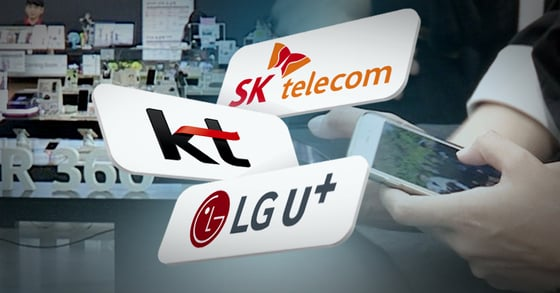

특히 1~2만원대 알뜰 통신사 사용자들은 더더욱이 조심해야함
흔히 성지에서 갤럭시SOO 할원 15만원이라고 하면
오? 개싸네 살까? 라고 생각하는데 여기서 계산을 잘해야함
보통 공시지원금으로 나오는 가격은
통신사에서 지원하는 지원금 최대치 + 대리점 지원금 = 할원(기기값)
이때 조건이 있음 공시지원금은 6개월동안 보통 11~12만원 요금제 써야함
부가서비스는 있을수도 없을수도 있음 + 2년 약정 (최소 의무 사용기간 6개월)
6개월 후에 해지할수있는데 당연히 위약금 폭탄 있음
그리고 공시지원금으로 구매했기 때문에 매달 25% 요금 할인은 불가능
자 그럼 계산해보자 평소 2만원대 알뜰 통신사 쓰던 사람이 2년동안 얼마나 더 지출을 하는지
6개월동안 x 12만원 요금제 = 72만원 (평소보다 60만원 더 지출함)
또 남은 18개월 x 공시지원금은 최소 4만5천~4만7천원 요금제는 써야하는데
통신3사에서 5만원대는 20GB대라 일상생활에서 맘편히 쓰려면 최소 6만원후반대는 해야함 (70~110GB) 그럼 보통 6만9천원
남은 18개월 x 6만9천원 = 124만2천원 (평소보다 88만2천원 더 지출함)
자 그럼 할원15만원 + 6개월치 요금 60만원 + 18개월치 88만2천원
= 2년동안 총 163만2천원 더 지출하는거
성지에서 바꾸는 사람들은 보통
나는 통신3사의 호갱님이라 무조건 통신3사만 쓰고, 무조건 10만원 이상 요금제만 씁니다~~
하는 사람한테만 괜찮은 조건인거임
일단 통신3사한테 저 돈 내는게 너무 아까움

2년마다 인터넷+티비+핸드폰 같이 이동하면서 폰도 같이 바꾼다고 하면 자급제랑 비교가 안될텐데...
이거도 한번 분석해줘보지 그래?